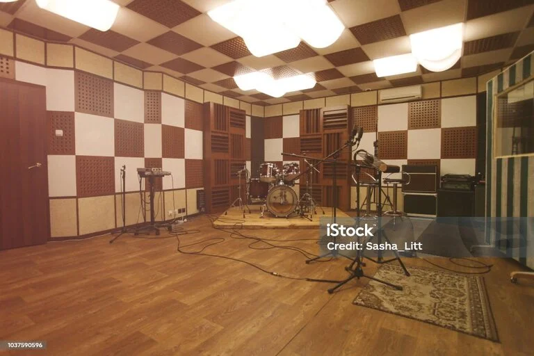
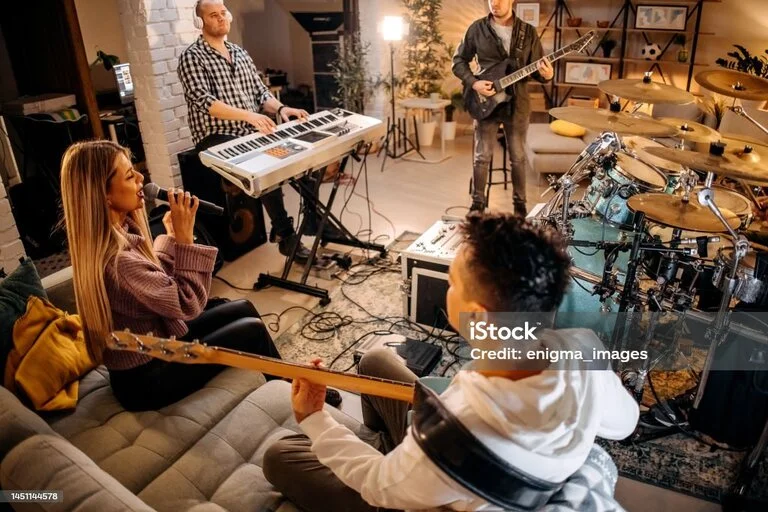
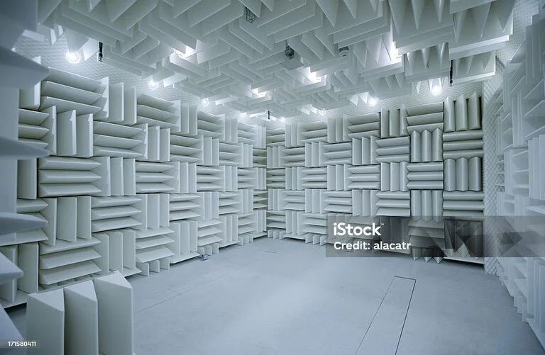
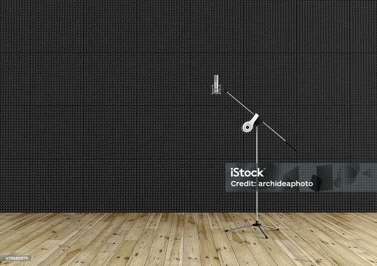
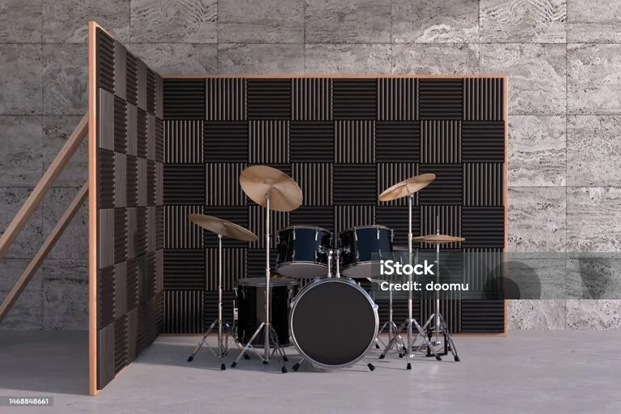

En Estudio Dragon, ofrecemos cinco salas de grabación completamente equipadas para satisfacer todas tus necesidades creativas. Desde la Sala Roja, diseñada para grabaciones íntimas y sesiones acústicas, hasta la Sala Azul, equipada con tecnología de vanguardia para producciones de alta gama, cada sala ofrece un ambiente único y profesional para tus proyectos musicales. La Sala Verde es perfecta para ensayos y grabaciones en vivo, mientras que la Sala Amarilla cuenta con equipos especializados para la producción de sonido envolvente. Finalmente, la Sala Naranja, con su diseño innovador y versátil, es ideal para sesiones de grabación multipropósito. Estas salas han sido cuidadosamente diseñadas y equipadas con equipos de alta calidad para garantizar que puedas lograr el mejor sonido posible en cada proyecto. Con nombres como "Sala Roja", "Sala Azul", "Sala Verde", "Sala Amarilla" y "Sala Naranja", cada una de nuestras salas ofrece un ambiente único y estimulante para tu creatividad. Ya sea que estés grabando música, produciendo un podcast o creando efectos de sonido para cine, nuestras salas están diseñadas para inspirarte y ayudarte a alcanzar tus metas artísticas. ¡Ven y descubre lo que nuestras salas pueden hacer por ti!